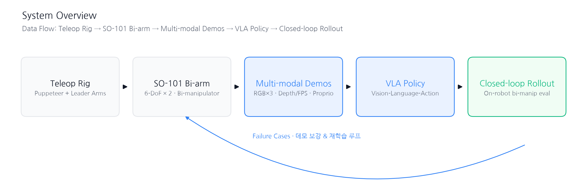
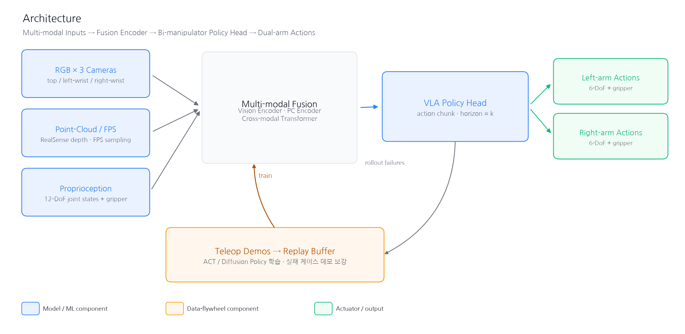
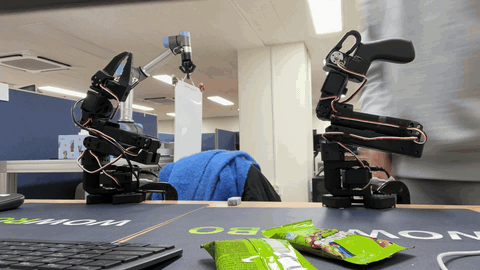
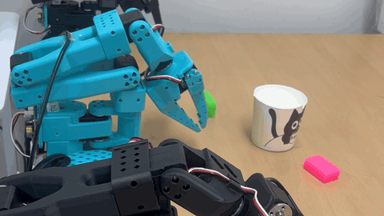
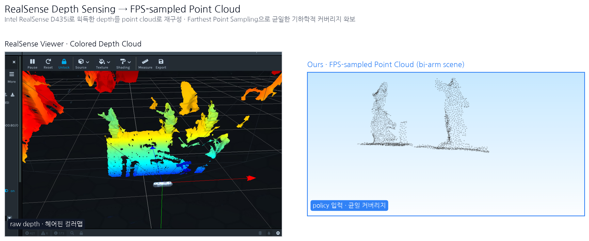

실기 SO-101 양팔 로봇에서 시연을 수집하고, 해당 데이터를 이용해 VLA 정책을 학습한 뒤 실제 로봇에서 폐루프 실행을 평가하는 전체 연구 흐름입니다.
다음 연구 질문으로 이어진 경험
SO-101 실기 로봇의 teleoperation 시연을 직접 수집하고 VLA 정책을 학습·평가하면서, 실제 환경에서 다양한 상태와 행동을 충분히 경험시키는 데이터의 중요성을 체감했습니다. 시연 수집은 시간과 장비가 필요한 과정이므로, 이후에는 World Model로 학습 데이터를 생성·확장할 수 있을까?라는 질문으로 관심을 넓혔습니다.
이후 별도 SO-100 데이터셋을 사용한 World Model 프로젝트에서 action-conditioned rollout을 생성하고, train/eval action 분포와 생성 결과의 Good/Bad case를 분석하며 action 표현과 모델 튜닝을 진행했습니다. 두 프로젝트의 데이터셋을 직접 이어 붙인 것은 아니며, 실제 로봇 학습 경험에서 얻은 데이터 효율성에 대한 문제의식이 후속 연구 질문에 영향을 준 흐름입니다.
01 · Research Context — Real-Robot Demonstration
양팔 조작 정책은 물체와 두 로봇 팔의 상대적 위치, 카메라 시점, 로봇의 관절 상태를 함께 고려해야 합니다. RGB 영상만으로도 장면을 인식할 수 있지만, 깊이와 3차원 위치 정보가 필요한 조작에서는 이미지 좌표만으로 공간 관계를 추정해야 하는 부담이 있습니다. 이 프로젝트에서는 실제 로봇 시연을 수집하고, RGB·Point Cloud·로봇 상태 정보를 정책 입력으로 구성하는 방법을 탐색했습니다.
02 · System Setup & Demonstration Data
SO-101 양팔 로봇과 리더-팔로워 teleoperation 환경을 구성하고, 작업자가 리더 로봇을 조작하는 동안 팔로워 로봇의 동작과 카메라 관측, 로봇 상태, 액션을 에피소드 단위로 기록했습니다. 수집한 시연은 Hugging Face LeRobot 데이터 형식으로 정리해 정책 학습과 실제 로봇 평가에 사용했습니다.
관측 장치는 Top·Front·Wrist 시점의 RGB 카메라와 RealSense 깊이 카메라로 구성했습니다. Top·Front 시점은 작업 공간과 물체의 배치를 넓게 관찰하고, Wrist 시점은 말단부 주변의 조작 상황을 가까이서 관찰합니다. 깊이 영상에서는 Point Cloud를 복원할 수 있으며, 로봇 관절 상태(proprioception)와 액션 정보도 시각 관측의 시점에 맞춰 정렬해 기록했습니다.

정책 학습에 사용한 관측·액션 데이터의 전체 구조입니다. Top·Front·Wrist RGB 영상과 Point Cloud/FPS, 로봇 상태 정보를 시점에 맞춰 구성하고, 정책이 양팔 로봇의 액션을 예측하는 흐름을 나타냅니다. 세부 입력 조합은 정책별 실험 단계에 따라 확장했습니다.
03 · Design Decisions & Implementation
리더-팔로워 방식의 실기 시연 수집
먼저 SO-101 양팔 로봇의 리더-팔로워 teleoperation 환경을 구성했습니다. 작업자가 리더 로봇을 조작하면 팔로워 로봇이 같은 동작을 수행하도록 연결하고, 카메라 관측과 로봇 상태, 액션을 에피소드 단위로 기록했습니다. 수집한 시연은 정책 학습에 사용할 수 있도록 정리했으며, 이후 실제 로봇에서 정책을 실행하는 폐루프 평가까지 이어갔습니다.
RGB 관측에 3차원 기하 정보 추가
RGB 영상만 사용하는 방식과 비교해, 깊이 카메라에서 얻은 Point Cloud를 비전 입력 경로에 추가하는 구조를 구현했습니다. Point Cloud는 물체와 로봇 팔 사이의 공간적 관계를 3차원 좌표로 표현할 수 있다는 장점이 있습니다. 점을 무작위로 추출하면 특정 영역에 표본이 몰릴 수 있어, 공간적으로 고른 점을 선택하는 Farthest Point Sampling(FPS)을 적용했습니다.
다중 카메라와 로봇 상태의 시간 정렬
Top·Front·Wrist 카메라 3개 시점과 로봇의 proprioceptive state를 함께 사용하도록 입력 구조를 구성했습니다. Top·Front 영상은 작업 공간과 물체의 상대적 배치를 넓게 관찰하고, Wrist 영상은 말단부 주변의 접촉·조작 상황을 보완합니다. 관절 상태와 액션을 각 카메라 관측의 시점에 맞춰 정렬해, 시각 관측만으로 드러나지 않는 로봇 자체의 자세·관절 정보를 함께 전달하도록 했습니다. 다만 카메라별 입력의 독립적인 기여도는 통제된 ablation으로 검증하지 않았습니다.
정책 베이스라인과 제한된 데이터 적응
Hugging Face LeRobot 파이프라인에서 ACT와 SmolVLA를 비교 대상으로 두고, 공개 OXE 데이터와 SO-101에서 수집한 제한된 teleoperation 시연을 활용해 정책 학습·적응 흐름을 실험했습니다. SmolVLA에서는 전체 모델을 다시 학습하는 대신 action expert에 LoRA를 적용해 제한된 시연 데이터로 적응하는 방법을 탐색했습니다. 이 페이지에서는 모델별 성공률이나 LoRA의 정량적 개선 폭을 제시할 만큼 통제된 반복 평가가 확보되지 않았으므로, 해당 선택을 성능 우위로 해석하지 않습니다.
개인 기여 범위
팀 리더로서 리더-팔로워 teleoperation을 통한 SO-101 시연 수집, LeRobot 데이터·학습 파이프라인 구성, ACT·SmolVLA 비교 실험, Point Cloud/FPS 및 다중 카메라·proprioceptive 입력 구성, SmolVLA action expert LoRA 적용 실험, 실제 로봇 rollout 평가를 연결했습니다. 기구 설계나 별도 perception 모델을 새로 학습한 것으로 범위를 넓히지 않으며, 입력 모달리티별 성능 기여도는 아직 검증되지 않은 항목으로 남겨두었습니다.
정책 입력과 출력의 전체 구조입니다. Top·Front·Wrist RGB 영상, FPS로 샘플링한 Point Cloud, 로봇 상태 정보를 융합해 VLA 정책에 전달하고 양팔 액션을 출력합니다.

리더-팔로워 방식의 시연 수집 장면입니다. 작업자의 조작을 팔로워 로봇의 동작과 함께 기록해 학습용 에피소드를 확보합니다.

학습한 정책을 실제 양팔 로봇에서 실행한 폐루프 롤아웃 예시입니다. 컵을 집고 이동하는 동작을 통해 관측과 액션이 실제 로봇 제어로 연결되는지 확인했습니다.

RealSense 깊이 영상에서 복원한 Point Cloud와 FPS 샘플링 결과입니다. 원본 점군의 밀집 분포를 줄이면서 공간 전체를 고르게 표현하도록 점을 선택했습니다.
04 · Experiments & Results
실험은 ACT를 이용한 초기 실기 모방학습에서 출발해, 카메라 관측을 확장한 SmolVLA 적용으로 이어졌습니다. 각 단계는 정책 구조와 관측 구성이 달라 동일한 조건의 모델 성능 비교라기보다, 실제 로봇 시연을 정책 학습과 실행으로 연결하고 후속 VLA 적응을 시도한 순차적 실험으로 해석해야 합니다.
Experiment 1 · ACT 기반 실기 모방학습
- 데이터: SO-101 양팔 로봇의 리더-팔로워 teleoperation으로 수집한 제한된 시연 에피소드
- 학습: LeRobot 파이프라인에서 관측과 액션 시퀀스를 사용해 ACT 정책 학습
- 실행 시나리오: 학습 정책을 실제 양팔 로봇에 배포하고 컵을 집어 이동하는 조작 동작을 폐루프 방식으로 실행
- 확인 결과: 시연 데이터 수집부터 정책 학습, 실제 로봇 액션 실행까지 이어지는 모방학습 경로를 확인
Experiment 2 · 다중 카메라 확장과 SmolVLA 적응
- 변경점: ACT 기반 초기 실험 이후 카메라 관측 구성을 확장하고 SmolVLA 정책을 적용
- 데이터·학습: 공개 OXE 데이터와 제한된 SO-101 시연을 활용한 학습·적응을 시도하고, action expert에 LoRA 적용
- 확인 결과: 사전학습 VLA 정책을 로봇 시연에 적응시키는 실험 경로와 파라미터 효율적 미세조정 방식을 확인
결과 해석
현재 확인 가능한 성과는 ACT 정책의 실제 양팔 로봇 폐루프 실행과, 관측 구성을 확장한 SmolVLA·LoRA 적응 실험을 수행했다는 점입니다. 다만 ACT와 SmolVLA는 데이터 구성과 카메라 입력, 정책 구조가 동일하게 통제된 비교 실험이 아니며, 정책별 성공률·반복 횟수·궤적 오차를 비교한 정량 벤치마크도 확보하지 않았습니다. 따라서 어느 정책이 더 높은 성능을 보였거나 카메라 추가가 성공률을 개선했다고 결론 내리지는 않습니다.
05 · Limitations & Reflection
이 프로젝트를 통해 SO-101 양팔 로봇의 시연 수집, LeRobot 데이터 구성, ACT 정책 학습, 실제 로봇 롤아웃까지 연결하는 모방학습 실험 경로를 구성했습니다. 이후 카메라 관측을 확장하고 SmolVLA와 action expert LoRA를 적용해 사전학습 VLA 정책의 로봇 적응 가능성도 탐색했습니다.
반면 시연 데이터의 규모가 제한적이고 실제 로봇 실험에 반복 비용이 들어, 카메라 수·Point Cloud/FPS·proprioception의 기여도와 ACT·SmolVLA 정책 차이를 분리해 검증하지 못했습니다. 따라서 현재 결과는 특정 입력 구성이 위치 추정이나 조작 성공률을 개선했다는 증거가 아니라, 서로 다른 정책과 관측 구성을 실제 로봇 학습·실행 경로에 적용해 본 실험 기록으로 해석합니다.
후속 실험에서는 동일한 시연 데이터 분할과 태스크, 평가 횟수를 고정하고 ACT와 SmolVLA를 비교해야 합니다. 또한 RGB-only, 다중 카메라, Point Cloud/FPS, proprioception을 단계적으로 추가·제거하는 ablation을 설계하고, 태스크 성공률·실패 유형·실행 안정성을 함께 기록해야 각 구성 요소의 기여도를 판단할 수 있습니다.
06 · Follow-up Research Question — Data Efficiency
실기 시연 수집에서 경험한 데이터 확보 비용과 행동 분포의 제한은 이후 World Model 프로젝트의 문제의식으로 이어졌습니다. 후속 프로젝트는 별도의 SO-100 데이터셋으로 수행했으며, 본 프로젝트의 SO-101 시연 데이터를 직접 재사용하지 않았습니다.